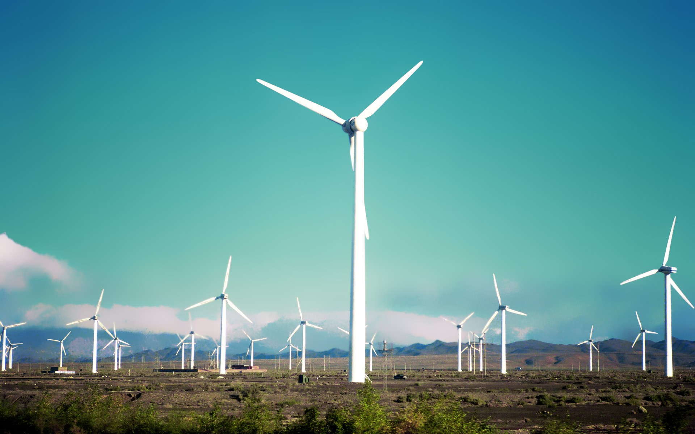

Recurso Eólico:
A energia eólica provém da radiação solar uma vez que os ventos são gerados pelo aquecimento não uniforme da superfície terrestre. Uma estimativa da energia total disponível dos ventos ao redor do planeta pode ser feita a partir da hipótese de que, aproximadamente, 2% da energia solar absorvida pela Terra é convertida em energia cinética dos ventos. Este percentual, embora pareça pequeno, representa centena de vezes a potência anual instalada nas centrais elétricas do mundo.
Os ventos que sopram em escala global e aqueles que se manifestam em pequena escala são influenciados por diferentes aspectos, entre os quais se destacam a altura, a rugosidade, os obstáculos e o relevo.
A seguir serão descritos os mecanismos de geração dos ventos e os principais fatores de influência no regime dos ventos de uma região.
Qualidade da energia eólica:
A qualidade de energia no contexto da geração eólica descreve o desempenho elétrico do sistema de geração de eletricidade do aerogerador onde quaisquer perturbações sobre a rede elétrica devem ser mantidas dentro de limites técnicos estabelecidos conforme o nível de exigência imposto pelo gerente de operações da rede.
Para a maior parte das aplicações de unidades eólicas, a rede pode ser considerada como um componente capaz de absorver toda a potência gerada por estas unidades, com tensão e freqüência constantes.
Conversão em energia elétrica:
Na atualidade utiliza-se a energia eólica para mover aerogeradores - grandes turbinas colocadas em lugares de muito vento, como no mar. Essas turbinas têm a forma de um catavento ou um moinho. Esse movimento, através de um gerador, produz energia elétrica. Precisam agrupar-se em parques eólicos, concentrações de aerogeradores, necessários para que a produção de energia se torne rentável, mas podem ser usados isoladamente, para alimentar localidades remotas e distantes da rede de transmissão. É possível ainda a utilização de aerogeradores de baixa tensão quando se trata de requisitos limitados de energia elétrica.
Aplicações dos sistemas eólicos:
Um sistema eólico pode ser utilizado em três aplicações distintas: sistemas isolados, sistemas híbridos e sistemas interligados à rede. Os sistemas obedecem a uma configuração básica, necessitam de uma unidade de controle de potência e, em determinados casos, de uma unidade de armazenamento.
- Sistemas Isolados:
Os sistemas isolados, em geral, utilizam alguma forma de armazenamento de energia. Este armazenamento pode ser feito através de baterias, com o objetivo de utilizar aparelhos elétricos, ou na forma de energia gravitacional, com a finalidade de armazenar a água bombeada em reservatórios para posterior utilização. Alguns sistemas isolados não necessitam de armazenamento, como no caso dos sistemas para irrigação onde toda a água bombeada é diretamente consumida.
- Sistemas Híbridos:
Os sistemas híbridos são aqueles que, desconectados da rede convencional, apresentam várias fontes de geração de energia como, por exemplo, turbinas eólicas, geração diesel, módulos fotovoltaicos, entre outras. A utilização de várias formas de geração de energia elétrica aumenta a complexidade do sistema e exige a otimização do uso de cada uma das fontes. Nesses casos, é necessário realizar um controle de todas as fontes para que haja máxima eficiência na entrega da energia para o usuário.
Em geral, os sistemas híbridos são empregados em sistemas de médio a grande porte destinado a atender um número maior de usuários. Por trabalhar com cargas em corrente alternada, o sistema híbrido também necessita de um inversor. Devido à grande complexidade de arranjos e multiplicidade de opções, a forma de otimização do sistema torna-se um estudo particular a cada caso.
- Sistemas Interligados à Rede:
Os sistemas interligados à rede utilizam um grande número de aerogeradores e não necessitam de sistemas de armazenamento de energia, pois toda a geração é entregue diretamente à rede elétrica. Os totais de potência instalada no mundo de sistemas eólicos interligados à rede somam aproximadamente 120 GW.
Principais vantagens da energia eólica:
Desvantagens da energia eólica:
Usinas eólicas no Brasil:
No Brasil há, instaladas, cerca de 9 usinas eólicas nos estados do Ceará, Paraná, Rio Grande do Norte, Pernambuco, Pará e Minas Gerais.
Saiba mais sobre o parque eólico de Osório-RS, clicando no link abaixo:
Fontes:
evolucaoenergiaeolica.wordpress.com
www.portal-energia.com